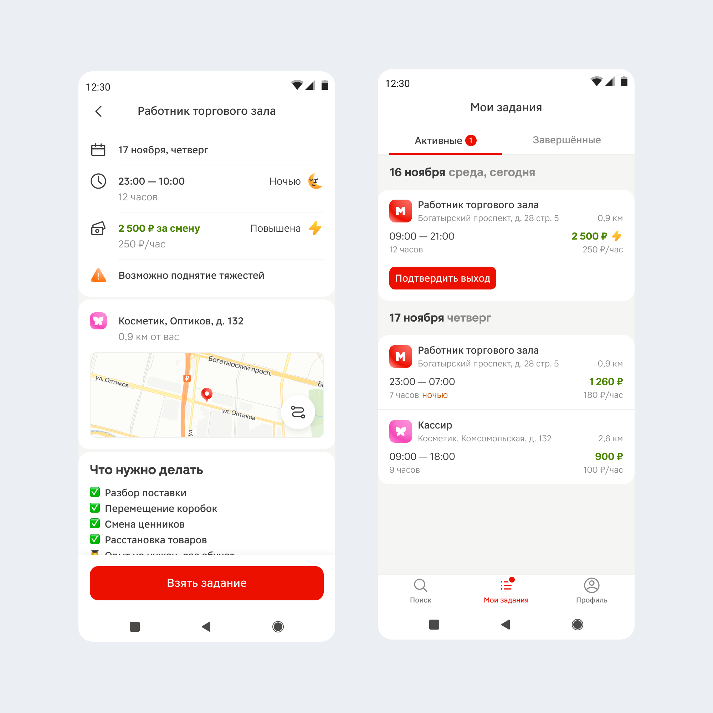
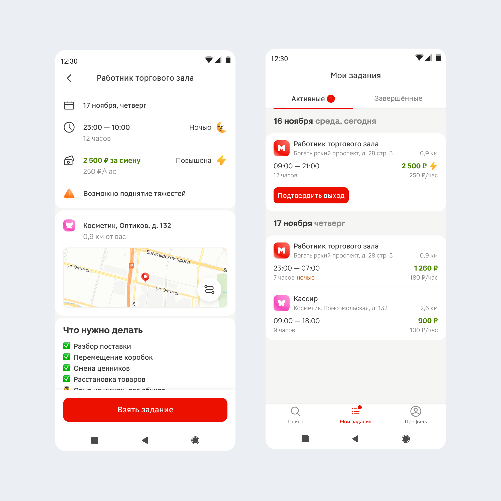

Категории кешбэка на кассах
Проработка сценария и вариантов для теста
За неделю погрузился в продукт и задачу, разобрался с техническими ограничениями и дизайн-системой касс. Подготовил 2 прототипа с разными вариантами взуализации категорий: список и плашки. Предложил идеи на развитие с подсветкой категорий в корзине. Провели исследование после которого я внёс правки, подготовил финальные вариант, собрал новые компоненты.

 
